glmnet
glmnet.RmdGlmnet is a package that fits a generalized linear model via penalized maximum likelihood. The regularization path is computed for the lasso or elasticnet penalty at a grid of values for the regularization parameter lambda. The algorithm is extremely fast, and can exploit sparsity in the input matrix x. It fits linear, logistic and multinomial, poisson, and Cox regression models. A variety of predictions can be made from the fitted models. It can also fit multi-response linear regression.
The authors of glmnet are Jerome Friedman, Trevor Hastie, Rob Tibshirani and Noah Simon, and the R package is maintained by Trevor Hastie. The matlab version of glmnet is maintained by Junyang Qian. This vignette describes the usage of glmnet in R. There is an additional vignette for the new relaxed features in glmnet, along with some new capabilities. There is as well a vignette devoted to Cox models in glmnet.
glmnet solves the following problem
\[ \min_{\beta_0,\beta} \frac{1}{N} \sum_{i=1}^{N} w_i l(y_i,\beta_0+\beta^T x_i) + \lambda\left[(1-\alpha)||\beta||_2^2/2 + \alpha ||\beta||_1\right], \]
over a grid of values of \(\lambda\) covering the entire range. Here \(l(y,\eta)\) is the negative log-likelihood contribution for observation \(i\); e.g. for the Gaussian case it is \(\frac{1}{2}(y-\eta)^2\). The elastic-net penalty is controlled by \(\alpha\), and bridges the gap between lasso (\(\alpha=1\), the default) and ridge (\(\alpha=0\)). The tuning parameter \(\lambda\) controls the overall strength of the penalty.
It is known that the ridge penalty shrinks the coefficients of correlated predictors towards each other while the lasso tends to pick one of them and discard the others. The elastic-net penalty mixes these two; if predictors are correlated in groups, an \(\alpha=0.5\) tends to select the groups in or out together. This is a higher level parameter, and users might pick a value upfront, else experiment with a few different values. One use of \(\alpha\) is for numerical stability; for example, the elastic net with \(\alpha = 1 - \epsilon\) for some small \(\epsilon > 0\) performs much like the lasso, but removes any degeneracies and wild behavior caused by extreme correlations.
The glmnet algorithms use cyclical coordinate descent, which successively optimizes the objective function over each parameter with others fixed, and cycles repeatedly until convergence. The package also makes use of the strong rules for efficient restriction of the active set. Due to highly efficient updates and techniques such as warm starts and active-set convergence, our algorithms can compute the solution path very fast.
The code can handle sparse input-matrix formats, as well as range constraints on coefficients. The core of glmnet is a set of fortran subroutines, which make for very fast execution.
The package also includes methods for prediction and plotting, and a function that performs K-fold cross-validation.
The theory and algorithms in this implementation are described in Friedman, Hastie, and Tibshirani (2010), Simon et al. (2011), Tibshirani et al. (2012) and Simon, Friedman, and Hastie (2013) .
Like many other R packages, the simplest way to obtain glmnet is to install it directly from CRAN. Type the following command in R console:
Users may change the repos options depending on their locations and preferences. Other options such as the directories where to install the packages can be altered in the command. For more details, see help(install.packages).
Here the R package has been downloaded and installed to the default directories.
Alternatively, users can download the package source from CRAN and type Unix commands to install it to the desired location.
The purpose of this section is to give users a general sense of the package, including the components, what they do and some basic usage. We will briefly go over the main functions, see the basic operations and have a look at the outputs. Users may have a better idea after this section what functions are available, which one to choose, or at least where to seek help. More details are given in later sections.
First, we load the glmnet package:
## Loading required package: Matrix## Loaded glmnet 3.0-1The default model used in the package is the Guassian linear model or “least squares”, which we will demonstrate in this section. We load a set of data created beforehand for illustration. Users can either load their own data or use those saved in the workspace.
The command loads an input matrix x and a response vector y from this saved R data archive.
We fit the model using the most basic call to glmnet.
“fit” is an object of class glmnet that contains all the relevant information of the fitted model for further use. We do not encourage users to extract the components directly. Instead, various methods are provided for the object such as plot, print, coef and predict that enable us to execute those tasks more elegantly.
We can visualize the coefficients by executing the plot function:
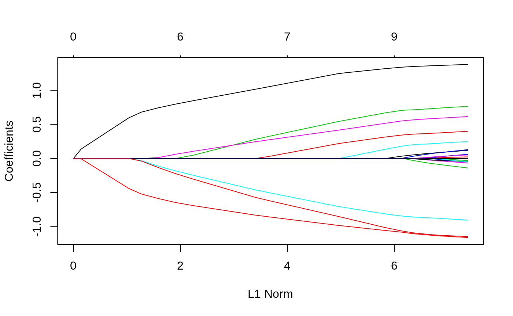
Each curve corresponds to a variable. It shows the path of its coefficient against the \(\ell_1\)-norm of the whole coefficient vector at as \(\lambda\) varies. The axis above indicates the number of nonzero coefficients at the current \(\lambda\), which is the effective degrees of freedom (df) for the lasso. Users may also wish to annotate the curves; this can be done by setting label = TRUE in the plot command.
A summary of the glmnet path at each step is displayed if we just enter the object name or use the print function:
##
## Call: glmnet(x = x, y = y)
##
## Df %Dev Lambda
## 1 0 0.00000 1.63100
## 2 2 0.05528 1.48600
## 3 2 0.14590 1.35400
## 4 2 0.22110 1.23400
## 5 2 0.28360 1.12400
## 6 2 0.33540 1.02400
## 7 4 0.39040 0.93320
## 8 5 0.45600 0.85030
## 9 5 0.51540 0.77470
## 10 6 0.57350 0.70590
## 11 6 0.62550 0.64320
## 12 6 0.66870 0.58610
## 13 6 0.70460 0.53400
## 14 6 0.73440 0.48660
## 15 7 0.76210 0.44330
## 16 7 0.78570 0.40400
## 17 7 0.80530 0.36810
## 18 7 0.82150 0.33540
## 19 7 0.83500 0.30560
## 20 7 0.84620 0.27840
## 21 7 0.85550 0.25370
## 22 7 0.86330 0.23120
## 23 8 0.87060 0.21060
## 24 8 0.87690 0.19190
## 25 8 0.88210 0.17490
## 26 8 0.88650 0.15930
## 27 8 0.89010 0.14520
## 28 8 0.89310 0.13230
## 29 8 0.89560 0.12050
## 30 8 0.89760 0.10980
## 31 9 0.89940 0.10010
## 32 9 0.90100 0.09117
## 33 9 0.90230 0.08307
## 34 9 0.90340 0.07569
## 35 10 0.90430 0.06897
## 36 11 0.90530 0.06284
## 37 11 0.90620 0.05726
## 38 12 0.90700 0.05217
## 39 15 0.90780 0.04754
## 40 16 0.90860 0.04331
## 41 16 0.90930 0.03947
## 42 16 0.90980 0.03596
## 43 17 0.91030 0.03277
## 44 17 0.91070 0.02985
## 45 18 0.91110 0.02720
## 46 18 0.91140 0.02479
## 47 19 0.91170 0.02258
## 48 19 0.91200 0.02058
## 49 19 0.91220 0.01875
## 50 19 0.91240 0.01708
## 51 19 0.91250 0.01557
## 52 19 0.91260 0.01418
## 53 19 0.91270 0.01292
## 54 19 0.91280 0.01178
## 55 19 0.91290 0.01073
## 56 19 0.91290 0.00978
## 57 19 0.91300 0.00891
## 58 19 0.91300 0.00812
## 59 19 0.91310 0.00740
## 60 19 0.91310 0.00674
## 61 19 0.91310 0.00614
## 62 20 0.91310 0.00559
## 63 20 0.91310 0.00510
## 64 20 0.91310 0.00464
## 65 20 0.91320 0.00423
## 66 20 0.91320 0.00386
## 67 20 0.91320 0.00351It shows from left to right the number of nonzero coefficients (Df), the percent (of null) deviance explained (%dev) and the value of \(\lambda\) (Lambda). Although by default glmnet calls for 100 values of lambda the program stops early if `%dev% does not change sufficently from one lambda to the next (typically near the end of the path.)
We can obtain the actual coefficients at one or more \(\lambda\)’s within the range of the sequence:
## 21 x 1 sparse Matrix of class "dgCMatrix"
## 1
## (Intercept) 0.150928072
## V1 1.320597195
## V2 .
## V3 0.675110234
## V4 .
## V5 -0.817411518
## V6 0.521436671
## V7 0.004829335
## V8 0.319415917
## V9 .
## V10 .
## V11 0.142498519
## V12 .
## V13 .
## V14 -1.059978702
## V15 .
## V16 .
## V17 .
## V18 .
## V19 .
## V20 -1.021873704(why s and not lambda? In case later we want to allow one to specify the model size in other ways.) Users can also make predictions at specific \(\lambda\)’s with new input data:
## 1 2
## [1,] -2.6025731 -2.7138626
## [2,] 1.6348323 1.7919846
## [3,] -3.1014967 -3.4777129
## [4,] -0.3540413 -0.5789109
## [5,] -2.3377144 -2.4553137
## [6,] 3.7860636 4.0486134
## [7,] -0.4757211 -0.3753130
## [8,] -2.6844679 -2.8196771
## [9,] 1.2276234 1.0480499
## [10,] 0.8598950 0.8757991The function glmnet returns a sequence of models for the users to choose from. In many cases, users may prefer the software to select one of them. Cross-validation is perhaps the simplest and most widely used method for that task.
cv.glmnet is the main function to do cross-validation here, along with various supporting methods such as plotting and prediction. We still act on the sample data loaded before.
cv.glmnet returns a cv.glmnet object, which is “cvfit” here, a list with all the ingredients of the cross-validation fit. As for glmnet, we do not encourage users to extract the components directly except for viewing the selected values of \(\lambda\). The package provides well-designed functions for potential tasks.
We can plot the object.
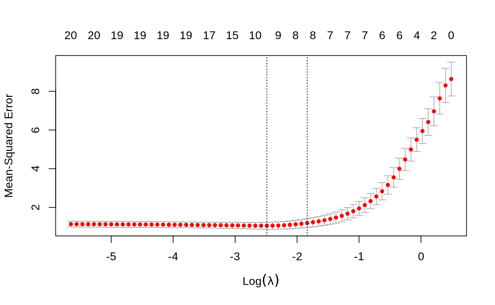
It includes the cross-validation curve (red dotted line), and upper and lower standard deviation curves along the \(\lambda\) sequence (error bars). Two selected \(\lambda\)’s are indicated by the vertical dotted lines (see below).
We can view the selected \(\lambda\)’s and the corresponding coefficients. For example,
## [1] 0.08307327lambda.min is the value of \(\lambda\) that gives minimum mean cross-validated error. The other \(\lambda\) saved is lambda.1se, which gives the most regularized model such that error is within one standard error of the minimum. To use that, we only need to replace lambda.min with lambda.1se above.
## 21 x 1 sparse Matrix of class "dgCMatrix"
## 1
## (Intercept) 0.14936467
## V1 1.32975267
## V2 .
## V3 0.69096092
## V4 .
## V5 -0.83122558
## V6 0.53669611
## V7 0.02005438
## V8 0.33193760
## V9 .
## V10 .
## V11 0.16239419
## V12 .
## V13 .
## V14 -1.07081121
## V15 .
## V16 .
## V17 .
## V18 .
## V19 .
## V20 -1.04340741Note that the coefficients are represented in the sparse matrix format. The reason is that the solutions along the regularization path are often sparse, and hence it is more efficient in time and space to use a sparse format. If you prefer non-sparse format, pipe the output through as.matrix().
Predictions can be made based on the fitted cv.glmnet object. Let’s see a toy example.
## 1
## [1,] -1.3647490
## [2,] 2.5686013
## [3,] 0.5705879
## [4,] 1.9682289
## [5,] 1.4964211newx is for the new input matrix and s, as before, is the value(s) of \(\lambda\) at which predictions are made.
That is the end of glmnet 101. With the tools introduced so far, users are able to fit the entire elastic net family, including ridge regression, using squared-error loss. In the package, there are many more options that give users a great deal of flexibility. To learn more, move on to later sections.
Linear regression here refers to two families of models. One is gaussian, the Gaussian family, and the other is mgaussian, the multiresponse Gaussian family. We first discuss the ordinary Gaussian and the multiresponse one after that.
gaussian is the default family option in the function glmnet. Suppose we have observations \(x_i \in \mathbb{R}^p\) and the responses \(y_i \in \mathbb{R}, i = 1, \ldots, N\). The objective function for the Gaussian family is \[
\min_{(\beta_0, \beta) \in \mathbb{R}^{p+1}}\frac{1}{2N} \sum_{i=1}^N (y_i -\beta_0-x_i^T \beta)^2+\lambda \left[ (1-\alpha)||\beta||_2^2/2 + \alpha||\beta||_1\right],
\] where \(\lambda \geq 0\) is a complexity parameter and \(0 \leq \alpha \leq 1\) is a compromise between ridge (\(\alpha = 0\)) and lasso (\(\alpha = 1\)).
Coordinate descent is applied to solve the problem. Specifically, suppose we have current estimates \(\tilde{\beta_0}\) and \(\tilde{\beta}_\ell\) \(\forall j\in 1,]\ldots,p\). By computing the gradient at \(\beta_j = \tilde{\beta}_j\) and simple calculus, the update is \[ \tilde{\beta}_j \leftarrow \frac{S(\frac{1}{N}\sum_{i=1}^N x_{ij}(y_i-\tilde{y}_i^{(j)}),\lambda \alpha)}{1+\lambda(1-\alpha)}, \] where \(\tilde{y}_i^{(j)} = \tilde{\beta}_0 + \sum_{\ell \neq j} x_{i\ell} \tilde{\beta}_\ell\), and \(S(z, \gamma)\) is the soft-thresholding operator with value \(\text{sign}(z)(|z|-\gamma)_+\).
This formula above applies when the x variables are standardized to have unit variance (the default); it is slightly more complicated when they are not. Note that for “family=gaussian”, glmnet standardizes \(y\) to have unit variance before computing its lambda sequence (and then unstandardizes the resulting coefficients); if you wish to reproduce/compare results with other software, best to supply a standardized \(y\) first (Using the “1/N” variance formula).
glmnet provides various options for users to customize the fit. We introduce some commonly used options here and they can be specified in the glmnet function.
alpha is for the elastic-net mixing parameter \(\alpha\), with range \(\alpha \in [0,1]\). \(\alpha = 1\) is the lasso (default) and \(\alpha = 0\) is the ridge.
weights is for the observation weights. Default is 1 for each observation. (Note: glmnet rescales the weights to sum to N, the sample size.)
nlambda is the number of \(\lambda\) values in the sequence. Default is 100.
lambda can be provided, but is typically not and the program constructs a sequence. When automatically generated, the \(\lambda\) sequence is determined by lambda.max and lambda.min.ratio. The latter is the ratio of smallest value of the generated \(\lambda\) sequence (say lambda.min) to lambda.max. The program then generated nlambda values linear on the log scale from lambda.max down to lambda.min. lambda.max is not given, but easily computed from the input \(x\) and \(y\); it is the smallest value for lambda such that all the coefficients are zero. For alpha=0 (ridge) lambda.max would be \(\infty\); hence for this case we pick a value corresponding to a small value for alpha close to zero.)
standardize is a logical flag for x variable standardization, prior to fitting the model sequence. The coefficients are always returned on the original scale. Default is standardize=TRUE.
For more information, type help(glmnet) or simply ?glmnet.
As an example, we set \(\alpha = 0.2\) (more like a ridge regression), and give double weights to the latter half of the observations. To avoid too long a display here, we set nlambda to 20. In practice, however, the number of values of \(\lambda\) is recommended to be 100 (default) or more. In most cases, it does not come with extra cost because of the warm-starts used in the algorithm, and for nonlinear models leads to better convergence properties.
We can then print the glmnet object.
##
## Call: glmnet(x = x, y = y, weights = c(rep(1, 50), rep(2, 50)), alpha = 0.2, nlambda = 20)
##
## Df %Dev Lambda
## 1 0 0.0000 7.9390
## 2 4 0.1789 4.8890
## 3 7 0.4445 3.0110
## 4 7 0.6567 1.8540
## 5 8 0.7850 1.1420
## 6 9 0.8539 0.7033
## 7 10 0.8867 0.4331
## 8 11 0.9025 0.2667
## 9 14 0.9101 0.1643
## 10 17 0.9138 0.1012
## 11 17 0.9154 0.0623
## 12 17 0.9160 0.0384
## 13 19 0.9163 0.0236
## 14 20 0.9164 0.0146
## 15 20 0.9164 0.0090
## 16 20 0.9165 0.0055
## 17 20 0.9165 0.0034This displays the call that produced the object fit and a three-column matrix with columns Df (the number of nonzero coefficients), %dev (the percent deviance explained) and Lambda (the corresponding value of \(\lambda\)).
(Note that the digits option can used to specify significant digits in the printout.)
Here the actual number of \(\lambda\)’s here is less than specified in the call. The reason lies in the stopping criteria of the algorithm. According to the default internal settings, the computations stop if either the fractional change in deviance down the path is less than \(10^{-5}\) or the fraction of explained deviance reaches \(0.999\). From the last few lines , we see the fraction of deviance does not change much and therefore the computation ends when meeting the stopping criteria. We can change such internal parameters. For details, see the Appendix section or type help(glmnet.control).
We can plot the fitted object as in the previous section. There are more options in the plot function.
Users can decide what is on the X-axis. xvar allows three measures: “norm” for the \(\ell_1\)-norm of the coefficients (default), “lambda” for the log-lambda value and “dev” for %deviance explained.
Users can also label the curves with variable sequence numbers simply by setting label = TRUE.
Let’s plot “fit” against the log-lambda value and with each curve labeled.
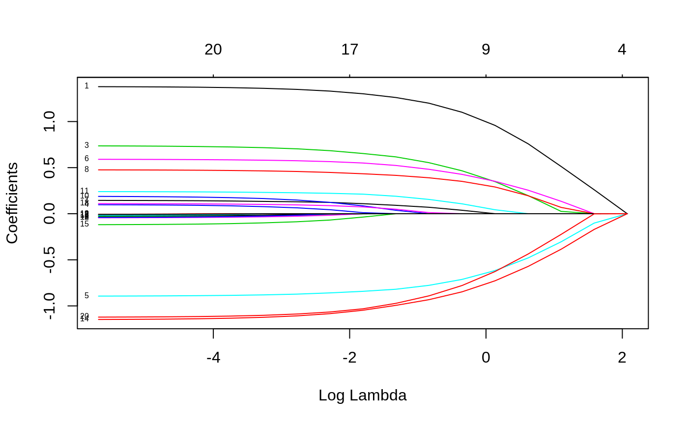
Now when we plot against %deviance we get a very different picture. This is percent deviance explained on the training data. What we see here is that toward the end of the path this value are not changing much, but the coefficients are “blowing up” a bit. This lets us focus attention on the parts of the fit that matter. This will especially be true for other models, such as logistic regression.
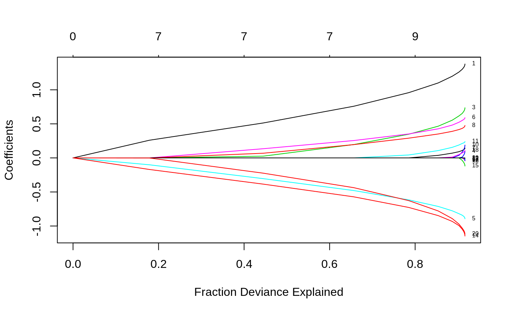
We can extract the coefficients and make predictions at certain values of \(\lambda\). Two commonly used options are:
s specifies the value(s) of \(\lambda\) at which extraction is made.
exact indicates whether the exact values of coefficients are desired or not. That is, if exact = TRUE, and predictions are to be made at values of s not included in the original fit, these values of s are merged with object$lambda, and the model is refit before predictions are made. If exact=FALSE (default), then the predict function uses linear interpolation to make predictions for values of s that do not coincide with lambdas used in the fitting algorithm.
A simple example is:
## [1] FALSEcoef.apprx = coef(fit, s = 0.5, exact = FALSE)
coef.exact = coef(fit, s = 0.5, exact = TRUE, x=x, y=y)
cbind2(coef.exact, coef.apprx)## 21 x 2 sparse Matrix of class "dgCMatrix"
## 1 1
## (Intercept) 0.2613110 0.2613110
## V1 1.0055470 1.0055473
## V2 . .
## V3 0.2677140 0.2677134
## V4 . .
## V5 -0.4476485 -0.4476475
## V6 0.2379287 0.2379283
## V7 . .
## V8 . .
## V9 . .
## V10 . .
## V11 . .
## V12 . .
## V13 . .
## V14 -0.8230862 -0.8230865
## V15 . .
## V16 . .
## V17 . .
## V18 . .
## V19 . .
## V20 -0.5553678 -0.5553675The left column is for exact = TRUE and the right for FALSE. We see from the above that 0.5 is not in the sequence and that hence there are some difference, though not much. Linear interpolation is mostly enough if there are no special requirements. Notice that with exact=TRUE we have to supply by named argument any data that was used in creating the original fit, in this case x and y.
Users can make predictions from the fitted object. In addition to the options in coef, the primary argument is newx, a matrix of new values for x. The type option allows users to choose the type of prediction: * “link” gives the fitted values
“response” the sames as “link” for “gaussian” family.
“coefficients” computes the coefficients at values of s
“nonzero” retuns a list of the indices of the nonzero coefficients for each value of s.
For example,
## 1
## [1,] -1.3362652
## [2,] 2.5894245
## [3,] 0.5872868
## [4,] 2.0977222
## [5,] 1.6436280gives the fitted values for the first 5 observations at \(\lambda = 0.05\). If multiple values of s are supplied, a matrix of predictions is produced.
Users can customize K-fold cross-validation. In addition to all the glmnet parameters, cv.glmnet has its special parameters including nfolds (the number of folds), foldid (user-supplied folds), type.measure(the loss used for cross-validation): * “deviance” or “mse” uses squared loss
As an example,
does 20-fold cross-validation, based on mean squared error criterion (default though).
Parallel computing is also supported by cv.glmnet. To make it work, users must register parallel beforehand. We give a simple example of comparison here. Unfortunately, the package doMC is not available on Windows platforms (it is on others), so we cannot run the code here, but we make it looks as if we have.
## user system elapsed
## 2.440 0.080 2.518## user system elapsed
## 2.450 0.157 1.567As suggested from the above, parallel computing can significantly speed up the computation process especially for large-scale problems.
Functions coef and predict on cv.glmnet object are similar to those for a glmnet object, except that two special strings are also supported by s (the values of \(\lambda\) requested): * “lambda.1se”: the largest \(\lambda\) at which the MSE is within one standard error of the minimal MSE.
## [1] 0.07569327## 21 x 1 sparse Matrix of class "dgCMatrix"
## 1
## (Intercept) 0.14867414
## V1 1.33377821
## V2 .
## V3 0.69787701
## V4 .
## V5 -0.83726751
## V6 0.54334327
## V7 0.02668633
## V8 0.33741131
## V9 .
## V10 .
## V11 0.17105029
## V12 .
## V13 .
## V14 -1.07552680
## V15 .
## V16 .
## V17 .
## V18 .
## V19 .
## V20 -1.05278699## 1
## [1,] -1.3638848
## [2,] 2.5713428
## [3,] 0.5729785
## [4,] 1.9881422
## [5,] 1.5179882Users can control the folds used. Here we use the same folds so we can also select a value for \(\alpha\).
foldid=sample(1:10,size=length(y),replace=TRUE)
cv1=cv.glmnet(x,y,foldid=foldid,alpha=1)
cv.5=cv.glmnet(x,y,foldid=foldid,alpha=.5)
cv0=cv.glmnet(x,y,foldid=foldid,alpha=0)There are no built-in plot functions to put them all on the same plot, so we are on our own here:
par(mfrow=c(2,2))
plot(cv1);plot(cv.5);plot(cv0)
plot(log(cv1$lambda),cv1$cvm,pch=19,col="red",xlab="log(Lambda)",ylab=cv1$name)
points(log(cv.5$lambda),cv.5$cvm,pch=19,col="grey")
points(log(cv0$lambda),cv0$cvm,pch=19,col="blue")
legend("topleft",legend=c("alpha= 1","alpha= .5","alpha 0"),pch=19,col=c("red","grey","blue"))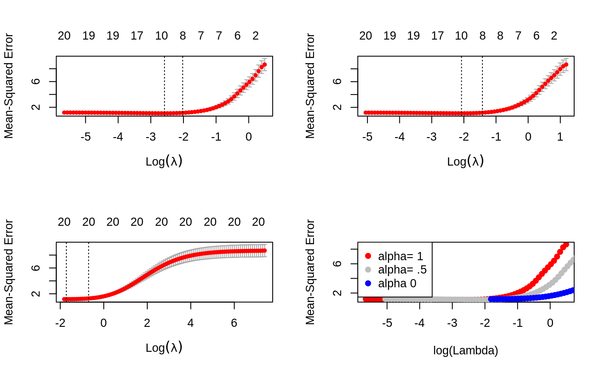
We see that lasso (alpha=1) does about the best here. We also see that the range of lambdas used differs with alpha.
These are recently added features that enhance the scope of the models. Suppose we want to fit our model, but limit the coefficients to be bigger than -0.7 and less than 0.5. This is easily achieved via the upper.limits and lower.limits arguments:
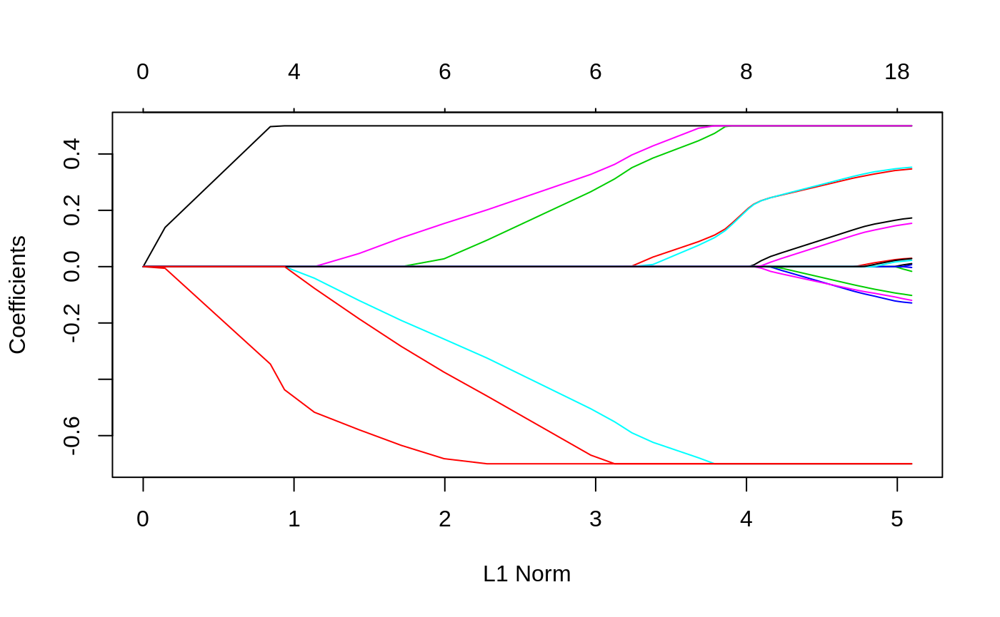
These are rather arbitrary limits; often we want the coefficients to be positive, so we can set only lower.limit to be 0. (Note, the lower limit must be no bigger than zero, and the upper limit no smaller than zero.) These bounds can be a vector, with different values for each coefficient. If given as a scalar, the same number gets recycled for all.
This argument allows users to apply separate penalty factors to each coefficient. Its default is 1 for each parameter, but other values can be specified. In particular, any variable with penalty.factor equal to zero is not penalized at all! Let \(v_j\) denote the penalty factor for \(j\) th variable. The penalty term becomes \[
\lambda \sum_{j=1}^p \boldsymbol{v_j} P_\alpha(\beta_j) = \lambda \sum_{j=1}^p \boldsymbol{v_j} \left[ (1-\alpha)\frac{1}{2} \beta_j^2 + \alpha |\beta_j| \right].
\] Note the penalty factors are internally rescaled to sum to nvars.
This is very useful when people have prior knowledge or preference over the variables. In many cases, some variables may be so important that one wants to keep them all the time, which can be achieved by setting corresponding penalty factors to 0:
p.fac = rep(1, 20)
p.fac[c(5, 10, 15)] = 0
pfit = glmnet(x, y, penalty.factor = p.fac)
plot(pfit, label = TRUE)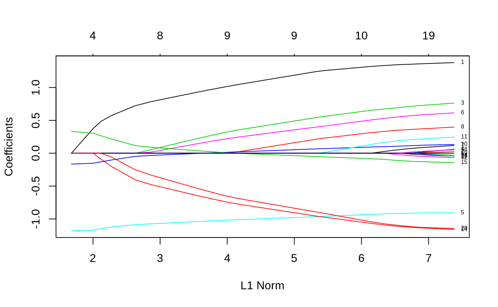
We see from the labels that the three variables with 0 penalty factors always stay in the model, while the others follow typical regularization paths and shrunken to 0 eventually.
Some other useful arguments. exclude allows one to block certain variables from being the model at all. Of course, one could simply subset these out of x, but sometimes exclude is more useful, since it returns a full vector of coefficients, just with the excluded ones set to zero. There is also an intercept argument which defaults to TRUE; if FALSE the intercept is forced to be zero.
Sometimes, especially when the number of variables is small, we want to add variable labels to a plot. Since glmnet is intended primarily for wide data, this is not supprted in plot.glmnet. However, it is easy to do, as the following little toy example shows.
We first generate some data, with 10 variables, and for lack of imagination and ease we give them simple character names. We then fit a glmnet model, and make the standard plot.
set.seed(101)
x=matrix(rnorm(1000),100,10)
y=rnorm(100)
vn=paste("var",1:10)
fit=glmnet(x,y)
plot(fit)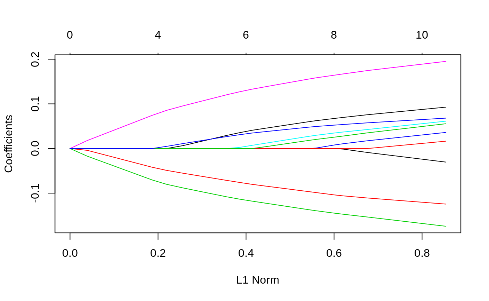
We wish to label the curves with the variable names. Here s a simple way to do this, using the axis command in R (and a little research into how to customize it). We need to have the positions of the coefficients at the end of the path, and we need to make some space using the par command, so that our labels will fit in. This requires knowing how long your labels are, but here they are all quite short.
par(mar=c(4.5,4.5,1,4))
plot(fit)
vnat=coef(fit)
vnat=vnat[-1,ncol(vnat)] # remove the intercept, and get the coefficients at the end of the path
axis(4, at=vnat,line=-.5,label=vn,las=1,tick=FALSE, cex.axis=0.5)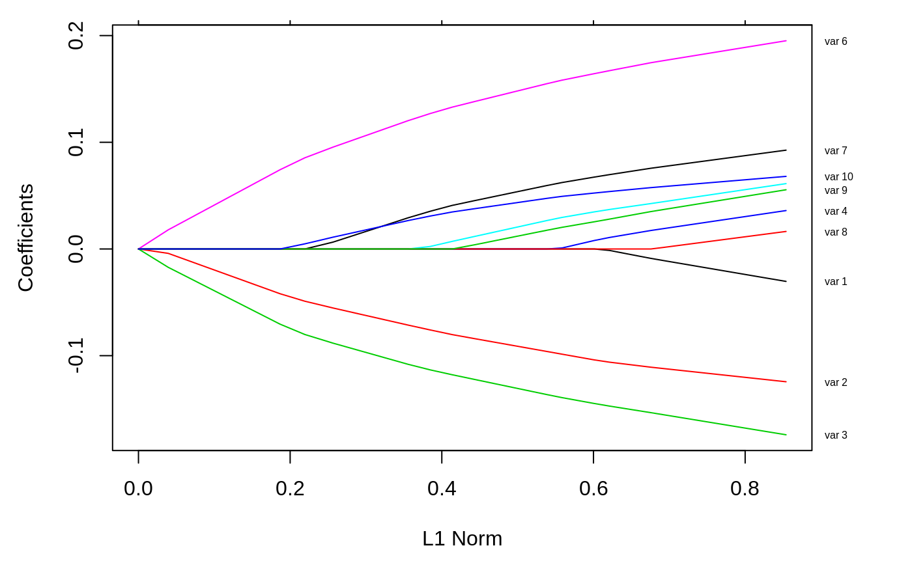
We have done nothing here to avoid overwriting of labels, in the event that they are close together. This would be a bit more work, but perhaps best left alone, anyway.
The multiresponse Gaussian family is obtained using family = "mgaussian" option in glmnet. It is very similar to the single-response case above. This is useful when there are a number of (correlated) responses - the so-called “multi-task learning” problem. Here the sharing involves which variables are selected, since when a variable is selected, a coefficient is fit for each response. Most of the options are the same, so we focus here on the differences with the single response model.
Obviously, as the name suggests, \(y\) is not a vector, but a matrix of quantitative responses in this section. The coefficients at each value of lambda are also a matrix as a result.
Here we solve the following problem: \[ \min_{(\beta_0, \beta) \in \mathbb{R}^{(p+1)\times K}}\frac{1}{2N} \sum_{i=1}^N ||y_i -\beta_0-\beta^T x_i||^2_F+\lambda \left[ (1-\alpha)||\beta||_F^2/2 + \alpha\sum_{j=1}^p||\beta_j||_2\right]. \] Here \(\beta_j\) is the jth row of the \(p\times K\) coefficient matrix \(\beta\), and we replace the absolute penalty on each single coefficient by a group-lasso penalty on each coefficient K-vector \(\beta_j\) for a single predictor \(x_j\).
We use a set of data generated beforehand for illustration.
We fit the data, with an object “mfit” returned.
For multiresponse Gaussian, the options in glmnet are almost the same as the single-response case, such as alpha, weights, nlambda, standardize. A exception to be noticed is that standardize.response is only for mgaussian family. The default value is FALSE. If standardize.response = TRUE, it standardizes the response variables.
To visualize the coefficients, we use the plot function.
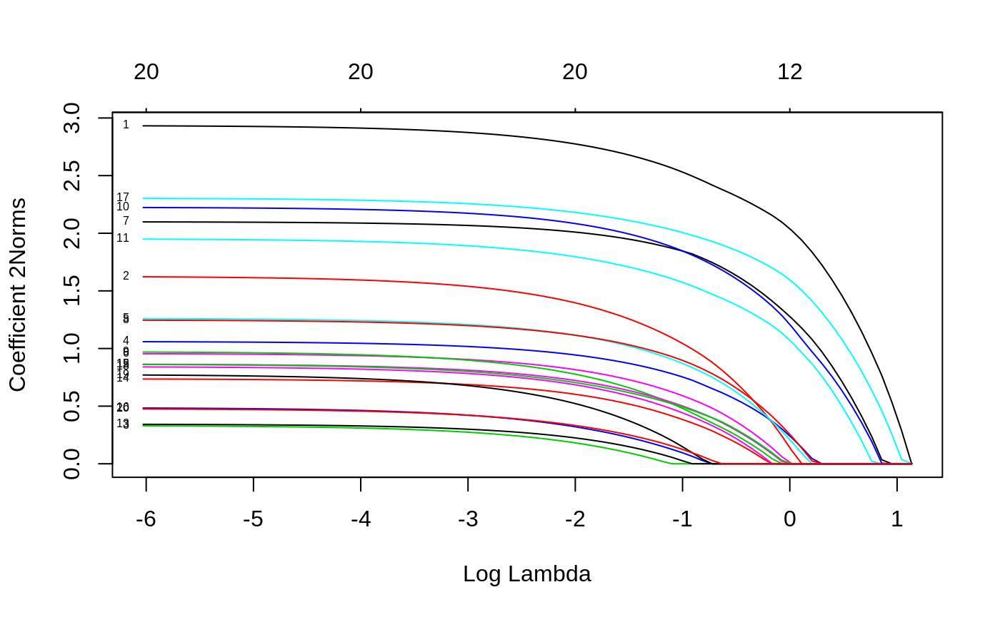
Note that we set type.coef = "2norm". Under this setting, a single curve is plotted per variable, with value equal to the \(\ell_2\) norm. The default setting is type.coef = "coef", where a coefficient plot is created for each response (multiple figures).
xvar and label are two other options besides ordinary graphical parameters. They are the same as the single-response case.
We can extract the coefficients at requested values of \(\lambda\) by using the function coef and make predictions by predict. The usage is similar and we only provide an example of predict here.
## , , 1
##
## y1 y2 y3 y4
## [1,] -4.7106263 -1.1634574 0.6027634 3.740989
## [2,] 4.1301735 -3.0507968 -1.2122630 4.970141
## [3,] 3.1595229 -0.5759621 0.2607981 2.053976
## [4,] 0.6459242 2.1205605 -0.2252050 3.146286
## [5,] -1.1791890 0.1056262 -7.3352965 3.248370
##
## , , 2
##
## y1 y2 y3 y4
## [1,] -4.6415158 -1.2290282 0.6118289 3.779521
## [2,] 4.4712843 -3.2529658 -1.2572583 5.266039
## [3,] 3.4735228 -0.6929231 0.4684037 2.055574
## [4,] 0.7353311 2.2965083 -0.2190297 2.989371
## [5,] -1.2759930 0.2892536 -7.8259206 3.205211The prediction result is saved in a three-dimensional array with the first two dimensions being the prediction matrix for each response variable and the third indicating the response variables.
We can also do k-fold cross-validation. The options are almost the same as the ordinary Gaussian family and we do not expand here.
We plot the resulting cv.glmnet object “cvmfit”.
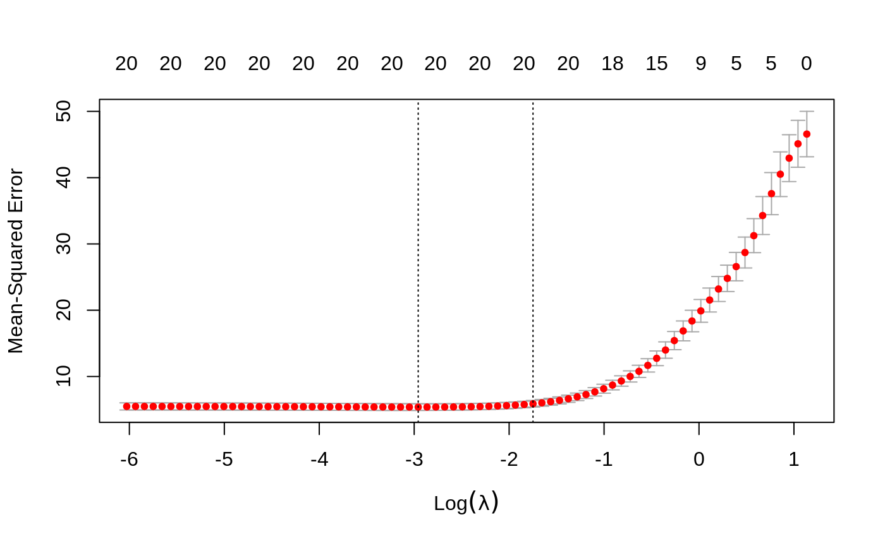
To show explicitly the selected optimal values of \(\lambda\), type
## [1] 0.05193158## [1] 0.174054As before, the first one is the value at which the minimal mean squared error is achieved and the second is for the most regularized model whose mean squared error is within one standard error of the minimal.
Prediction for cv.glmnet object works almost the same as for glmnet object. We omit the details here.
Logistic regression is another widely-used model when the response is categorical. If there are two possible outcomes, we use the binomial distribution, else we use the multinomial.
For the binomial model, suppose the response variable takes value in \(\mathcal{G}=\{1,2\}\). Denote \(y_i = I(g_i=1)\). We model \[\mbox{Pr}(G=2|X=x)=\frac{e^{\beta_0+\beta^Tx}}{1+e^{\beta_0+\beta^Tx}},\] which can be written in the following form \[\log\frac{\mbox{Pr}(G=2|X=x)}{\mbox{Pr}(G=1|X=x)}=\beta_0+\beta^Tx,\] the so-called “logistic” or log-odds transformation.
The objective function for the penalized logistic regression uses the negative binomial log-likelihood, and is \[ \min_{(\beta_0, \beta) \in \mathbb{R}^{p+1}} -\left[\frac{1}{N} \sum_{i=1}^N y_i \cdot (\beta_0 + x_i^T \beta) - \log (1+e^{(\beta_0+x_i^T \beta)})\right] + \lambda \big[ (1-\alpha)||\beta||_2^2/2 + \alpha||\beta||_1\big]. \] Logistic regression is often plagued with degeneracies when \(p > N\) and exhibits wild behavior even when \(N\) is close to \(p\); the elastic-net penalty alleviates these issues, and regularizes and selects variables as well.
Our algorithm uses a quadratic approximation to the log-likelihood, and then coordinate descent on the resulting penalized weighted least-squares problem. These constitute an outer and inner loop.
For illustration purpose, we load pre-generated input matrix x and the response vector y from the data file.
The input matrix \(x\) is the same as other families. For binomial logistic regression, the response variable \(y\) should be either a factor with two levels, or a two-column matrix of counts or proportions.
Other optional arguments of glmnet for binomial regression are almost same as those for Gaussian family. Don’t forget to set family option to “binomial”.
Like before, we can print and plot the fitted object, extract the coefficients at specific \(\lambda\)’s and also make predictions. For plotting, the optional arguments such as xvar and label are similar to the Gaussian. We plot against the deviance explained and show the labels.
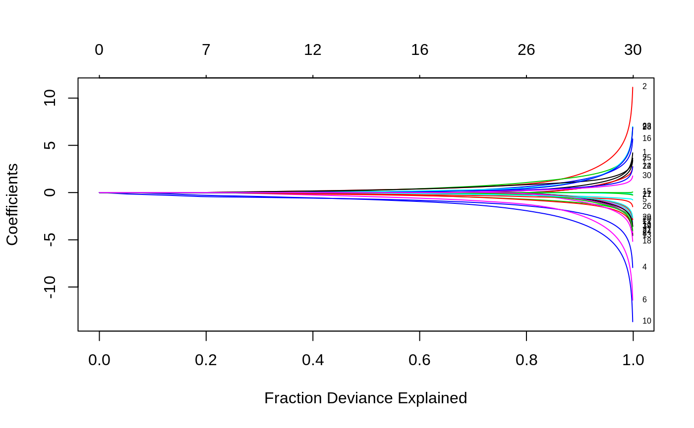
Prediction is a little different for logistic from Gaussian, mainly in the option type. “link” and “response” are never equivalent and “class” is only available for logistic regression. In summary, * “link” gives the linear predictors
“response” gives the fitted probabilities
“class” produces the class label corresponding to the maximum probability.
“coefficients” computes the coefficients at values of s
“nonzero” retuns a list of the indices of the nonzero coefficients for each value of s.
For “binomial” models, results (“link”, “response”, “coefficients”, “nonzero”) are returned only for the class corresponding to the second level of the factor response.
In the following example, we make prediction of the class labels at \(\lambda = 0.05, 0.01\).
## 1 2
## [1,] "0" "0"
## [2,] "1" "1"
## [3,] "1" "1"
## [4,] "0" "0"
## [5,] "1" "1"For logistic regression, cv.glmnet has similar arguments and usage as Gaussian. nfolds, weights, lambda, parallel are all available to users. There are some differences in type.measure: “deviance” and “mse” do not both mean squared loss and “class” is enabled. Hence, * “mse” uses squared loss.
“deviance” uses actual deviance.
“mae” uses mean absolute error.
“class” gives misclassification error.
“auc” (for two-class logistic regression ONLY) gives area under the ROC curve.
For example,
It uses misclassification error as the criterion for 10-fold cross-validation.
We plot the object and show the optimal values of \(\lambda\).
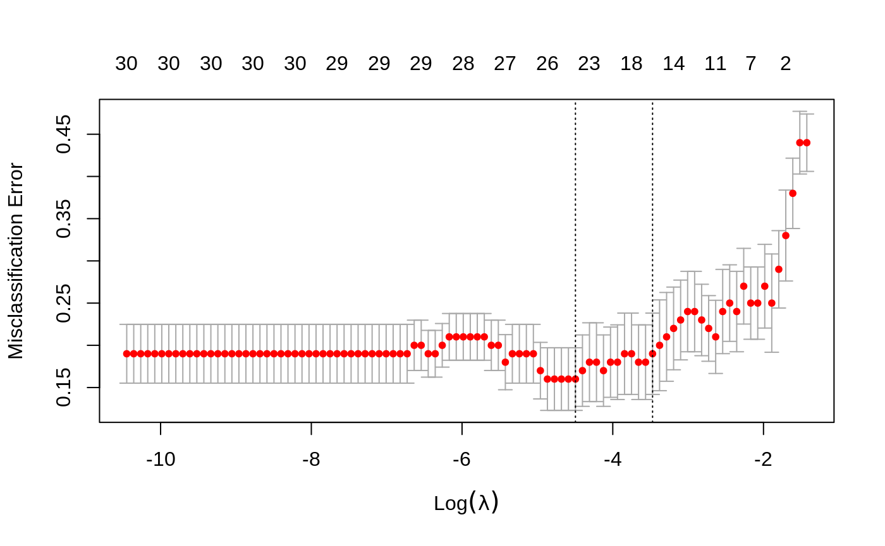
## [1] 0.01116192## [1] 0.0310587coef and predict are simliar to the Gaussian case and we omit the details. We review by some examples.
## 31 x 1 sparse Matrix of class "dgCMatrix"
## 1
## (Intercept) 0.219571058
## V1 0.127143183
## V2 0.773438290
## V3 -0.622026676
## V4 -1.249153389
## V5 -0.236036348
## V6 -1.086126630
## V7 .
## V8 -0.662605659
## V9 0.903895120
## V10 -1.662994097
## V11 -0.069429691
## V12 -0.109197704
## V13 .
## V14 .
## V15 .
## V16 0.489302060
## V17 .
## V18 -0.123121403
## V19 -0.009732698
## V20 -0.063913565
## V21 .
## V22 0.237278300
## V23 0.413516339
## V24 -0.040687440
## V25 0.746129316
## V26 -0.376173274
## V27 -0.168082915
## V28 0.312045065
## V29 -0.254478998
## V30 0.157077462As mentioned previously, the results returned here are only for the second level of the factor response.
## 1
## [1,] "0"
## [2,] "1"
## [3,] "1"
## [4,] "0"
## [5,] "1"
## [6,] "0"
## [7,] "0"
## [8,] "0"
## [9,] "1"
## [10,] "1"Like other GLMs, glmnet allows for an “offset”. This is a fixed vector of N numbers that is added into the linear predictor. For example, you may have fitted some other logistic regression using other variables (and data), and now you want to see if the present variables can add anything. So you use the predicted logit from the other model as an offset in.
For the multinomial model, suppose the response variable has \(K\) levels \({\cal G}=\{1,2,\ldots,K\}\). Here we model \[\mbox{Pr}(G=k|X=x)=\frac{e^{\beta_{0k}+\beta_k^Tx}}{\sum_{\ell=1}^Ke^{\beta_{0\ell}+\beta_\ell^Tx}}.\]
Let \({Y}\) be the \(N \times K\) indicator response matrix, with elements \(y_{i\ell} = I(g_i=\ell)\). Then the elastic-net penalized negative log-likelihood function becomes \[ \ell(\{\beta_{0k},\beta_{k}\}_1^K) = -\left[\frac{1}{N} \sum_{i=1}^N \Big(\sum_{k=1}^Ky_{il} (\beta_{0k} + x_i^T \beta_k)- \log \big(\sum_{k=1}^K e^{\beta_{0k}+x_i^T \beta_k}\big)\Big)\right] +\lambda \left[ (1-\alpha)||\beta||_F^2/2 + \alpha\sum_{j=1}^p||\beta_j||_q\right]. \] Here we really abuse notation! \(\beta\) is a \(p\times K\) matrix of coefficients. \(\beta_k\) refers to the kth column (for outcome category k), and \(\beta_j\) the jth row (vector of K coefficients for variable j). The last penalty term is \(||\beta_j||_q\), we have two options for q: \(q\in \{1,2\}\). When q=1, this is a lasso penalty on each of the parameters. When q=2, this is a grouped-lasso penalty on all the K coefficients for a particular variables, which makes them all be zero or nonzero together.
The standard Newton algorithm can be tedious here. Instead, we use a so-called partial Newton algorithm by making a partial quadratic approximation to the log-likelihood, allowing only \((\beta_{0k}, \beta_k)\) to vary for a single class at a time. For each value of \(\lambda\), we first cycle over all classes indexed by \(k\), computing each time a partial quadratic approximation about the parameters of the current class. Then the inner procedure is almost the same as for the binomial case. This is the case for lasso (q=1). When q=2, we use a different approach, which we wont dwell on here.
For the multinomial case, the usage is similar to logistic regression, and we mainly illustrate by examples and address any differences. We load a set of generated data.
The optional arguments in glmnet for multinomial logistic regression are mostly similar to binomial regression except for a few cases.
The response variable can be a nc >= 2 level factor, or a nc-column matrix of counts or proportions. Internally glmnet will make the rows of this matrix sum to 1, and absorb the total mass into the weight for that observation.
offset should be a nobs x nc matrix if there is one.
A special option for multinomial regression is type.multinomial, which allows the usage of a grouped lasso penalty if type.multinomial = "grouped". This will ensure that the multinomial coefficients for a variable are all in or out together, just like for the multi-response Gaussian.
We plot the resulting object “fit”.
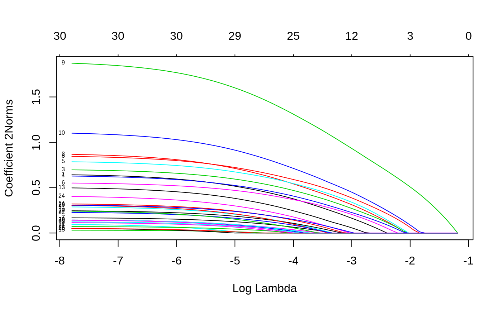
The options are xvar, label and type.coef, in addition to other ordinary graphical parameters.
xvar and label are the same as other families while type.coef is only for multinomial regression and multiresponse Gaussian model. It can produce a figure of coefficients for each response variable if type.coef = "coef" or a figure showing the \(\ell_2\)-norm in one figure if type.coef = "2norm"
We can also do cross-validation and plot the returned object.
## Warning: executing %dopar% sequentially: no parallel backend registered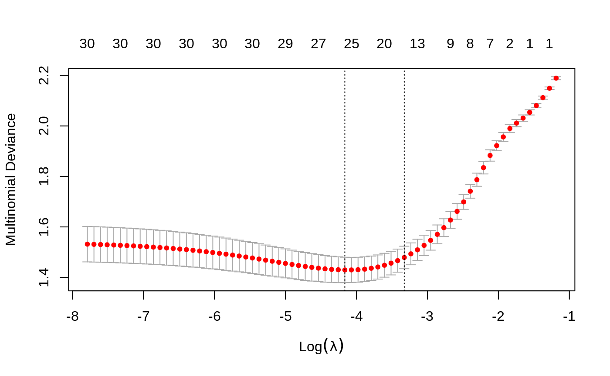
Note that although type.multinomial is not a typical argument in cv.glmnet, in fact any argument that can be passed to glmnet is valid in the argument list of cv.glmnet. We also use parallel computing to accelerate the calculation.
Users may wish to predict at the optimally selected \(\lambda\):
## 1
## [1,] "3"
## [2,] "2"
## [3,] "2"
## [4,] "3"
## [5,] "1"
## [6,] "3"
## [7,] "3"
## [8,] "1"
## [9,] "1"
## [10,] "2"Poisson regression is used to model count data under the assumption of Poisson error, or otherwise non-negative data where the mean and variance are proportional. Like the Gaussian and binomial model, the Poisson is a member of the exponential family of distributions. We usually model its positive mean on the log scale: \(\log \mu(x) = \beta_0+\beta' x\). The log-likelihood for observations \(\{x_i,y_i\}_1^N\) is given my \[ l(\beta|X, Y) = \sum_{i=1}^N \left(y_i (\beta_0+\beta' x_i) - e^{\beta_0+\beta^Tx_i}\right). \] As before, we optimize the penalized log-lielihood: \[ \min_{\beta_0,\beta} -\frac1N l(\beta|X, Y) + \lambda \left((1-\alpha) \sum_{i=1}^N \beta_i^2/2) +\alpha \sum_{i=1}^N |\beta_i|\right). \]
Glmnet uses an outer Newton loop, and an inner weighted least-squares loop (as in logistic regression) to optimize this criterion.
First, we load a pre-generated set of Poisson data.
We apply the function glmnet with the "poisson" option.
The optional input arguments of glmnet for "poisson" family are similar to those for others.
offset is a useful argument particularly in Poisson models.
When dealing with rate data in Poisson models, the counts collected are often based on different exposures, such as length of time observed, area and years. A poisson rate \(\mu(x)\) is relative to a unit exposure time, so if an observation \(y_i\) was exposed for \(E_i\) units of time, then the expected count would be \(E_i\mu(x)\), and the log mean would be \(\log(E_i)+\log(\mu(x))\). In a case like this, we would supply an offset \(\log(E_i)\) for each observation. Hence offset is a vector of length nobs that is included in the linear predictor. Other families can also use options, typically for different reasons.
(Warning: if offset is supplied in glmnet, offsets must also also be supplied to predict to make reasonable predictions.)
Again, we plot the coefficients to have a first sense of the result.
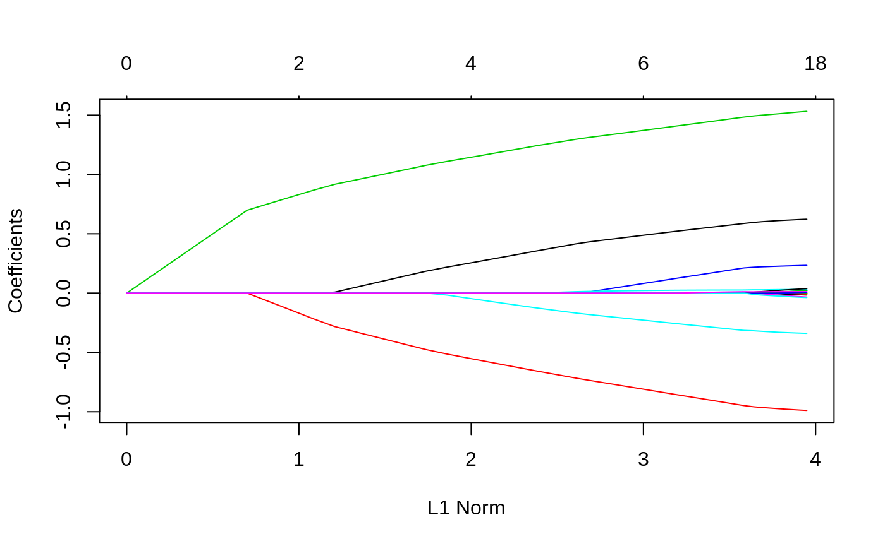
Like before, we can extract the coefficients and make predictions at certain \(\lambda\)’s by using coef and predict respectively. The optional input arguments are similar to those for other families. In function predict, the option type, which is the type of prediction required, has its own specialties for Poisson family. That is, * “link” (default) gives the linear predictors like others * “response” gives the fitted mean * “coefficients” computes the coefficients at the requested values for s, which can also be realized by coef function * “nonzero” returns a a list of the indices of the nonzero coefficients for each value of s.
For example, we can do as follows.
## 21 x 1 sparse Matrix of class "dgCMatrix"
## 1
## (Intercept) 0.61123371
## V1 0.45819758
## V2 -0.77060709
## V3 1.34015128
## V4 0.04350500
## V5 -0.20325967
## V6 .
## V7 .
## V8 .
## V9 .
## V10 .
## V11 .
## V12 0.01816309
## V13 .
## V14 .
## V15 .
## V16 .
## V17 .
## V18 .
## V19 .
## V20 .## 1 2
## [1,] 2.4944232 4.4263365
## [2,] 10.3513120 11.0586174
## [3,] 0.1179704 0.1781626
## [4,] 0.9713412 1.6828778
## [5,] 1.1133472 1.9934537We may also use cross-validation to find the optimal \(\lambda\)’s and thus make inferences.
Options are almost the same as the Gaussian family except that for type.measure, * “deviance” (default) gives the deviance * “mse” stands for mean squared error * “mae” is for mean absolute error.
We can plot the cv.glmnet object.
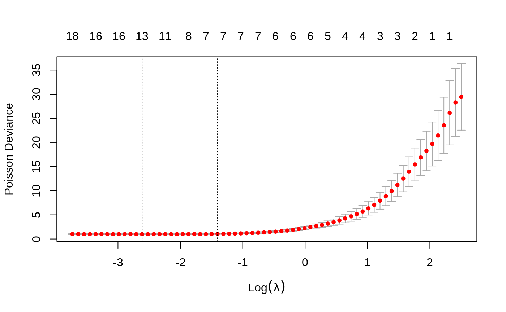
We can also show the optimal \(\lambda\)’s and the corresponding coefficients.
## 21 x 2 sparse Matrix of class "dgCMatrix"
## 1 2
## (Intercept) 0.070584044 0.200007601
## V1 0.609229006 0.571833738
## V2 -0.972486782 -0.927099773
## V3 1.509004735 1.466409189
## V4 0.225598648 0.192138902
## V5 -0.328715117 -0.301559295
## V6 . .
## V7 -0.005088443 .
## V8 . .
## V9 . .
## V10 0.006071218 .
## V11 . .
## V12 0.029070537 0.025801372
## V13 -0.014882186 .
## V14 0.020864442 .
## V15 . .
## V16 0.008606586 .
## V17 . .
## V18 . .
## V19 -0.023621751 .
## V20 0.011789503 0.009436611The predict method is similar and we do not repeat it here.
The Cox proportional hazards model is commonly used for the study of the relationship beteween predictor variables and survival time. In the usual survival analysis framework, we have data of the form \((y_1, x_1, \delta_1), \ldots, (y_n, x_n, \delta_n)\) where \(y_i\), the observed time, is a time of failure if \(\delta_i\) is 1 or right-censoring if \(\delta_i\) is 0. We also let \(t_1 < t_2 < \ldots < t_m\) be the increasing list of unique failure times, and \(j(i)\) denote the index of the observation failing at time \(t_i\).
The Cox model assumes a semi-parametric form for the hazard \[ h_i(t) = h_0(t) e^{x_i^T \beta}, \] where \(h_i(t)\) is the hazard for patient \(i\) at time \(t\), \(h_0(t)\) is a shared baseline hazard, and \(\beta\) is a fixed, length \(p\) vector. In the classic setting \(n \geq p\), inference is made via the partial likelihood \[ L(\beta) = \prod_{i=1}^m \frac{e^{x_{j(i)}^T \beta}}{\sum_{j \in R_i} e^{x_j^T \beta}}, \] where \(R_i\) is the set of indices \(j\) with \(y_j \geq t_i\) (those at risk at time \(t_i\)).
Note there is no intercept in the Cox mode (its built into the baseline hazard, and like it, would cancel in the partial likelihood.)
We penalize the negative log of the partial likelihood, just like the other models, with an elastic-net penalty.
We use a pre-generated set of sample data and response. Users can load their own data and follow a similar procedure. In this case \(x\) must be an \(n\times p\) matrix of covariate values - each row corresponds to a patient and each column a covariate. \(y\) is an \(n \times 2\) matrix, with a column “time” of failure/censoring times, and “status” a 0/1 indicator, with 1 meaning the time is a failure time, and zero a censoring time.
## time status
## [1,] 1.76877757 1
## [2,] 0.54528404 1
## [3,] 0.04485918 0
## [4,] 0.85032298 0
## [5,] 0.61488426 1The Surv function in the package survival can create such a matrix. Note, however, that the coxph and related linear models can handle interval and other forms of censoring, while glmnet can only handle right censoring in its present form.
We apply the glmnet function to compute the solution path under default settings.
All the standard options are available such as alpha, weights, nlambda and standardize. Their usage is similar as in the Gaussian case and we omit the details here. Users can also refer to the help file help(glmnet).
We can plot the coefficients.
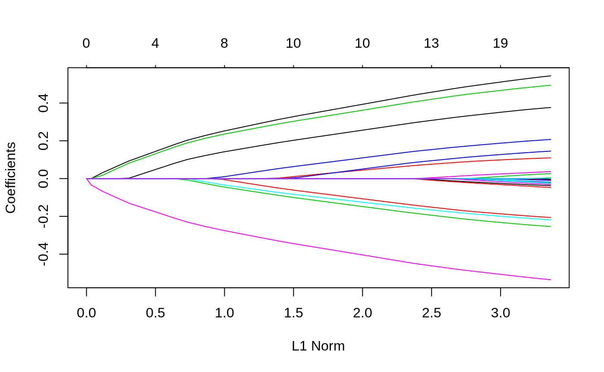
As before, we can extract the coefficients at certain values of \(\lambda\).
## 30 x 1 sparse Matrix of class "dgCMatrix"
## 1
## V1 0.37693638
## V2 -0.09547797
## V3 -0.13595972
## V4 0.09814146
## V5 -0.11437545
## V6 -0.38898545
## V7 0.24291400
## V8 0.03647596
## V9 0.34739813
## V10 0.03865115
## V11 .
## V12 .
## V13 .
## V14 .
## V15 .
## V16 .
## V17 .
## V18 .
## V19 .
## V20 .
## V21 .
## V22 .
## V23 .
## V24 .
## V25 .
## V26 .
## V27 .
## V28 .
## V29 .
## V30 .Since the Cox Model is not commonly used for prediction, we do not give an illustrative example on prediction. If needed, users can refer to the help file by typing help(predict.glmnet).
Also, the function cv.glmnet can be used to compute \(k\)-fold cross-validation for the Cox model. The usage is similar to that for other families except for two main differences.
One is that type.measure only supports “deviance”(also default), which gives the partial-likelihood.
The other is in the option grouped. grouped = TRUE obtains the CV partial likelihood for the Kth fold by subtraction; by subtracting the log partial likelihood evaluated on the full dataset from that evaluated on the on the (K-1)/K dataset. This makes more efficient use of risk sets. With grouped=FALSE the log partial likelihood is computed only on the Kth fold, which is only reasonable if each fold has a large number of observations.
Once fit, we can view the optimal \(\lambda\) value and a cross validated error plot to help evaluate our model.
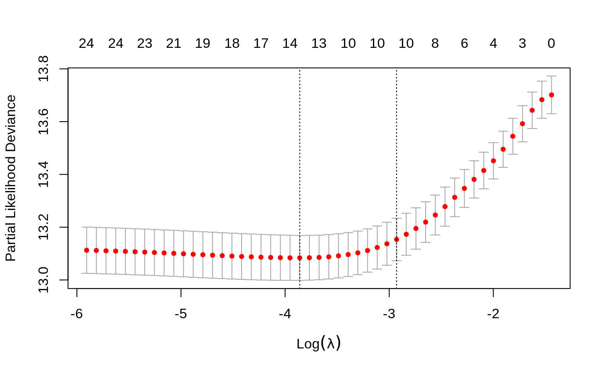
As previously, the left vertical line in our plot shows us where the CV-error curve hits its minimum. The right vertical line shows us the most regularized model with CV-error within 1 standard deviation of the minimum. We also extract such optimal \(\lambda\)’s.
## [1] 0.02107668## [1] 0.05343706We can check the active covariates in our model and see their coefficients.
coef.min = coef(cvfit, s = "lambda.min")
active.min = which(coef.min != 0)
index.min = coef.min[active.min]## [1] 0.47296769 -0.16213158 -0.20518470 0.16374470 -0.17544445 -0.47500198
## [7] 0.32076305 0.08339592 0.43422644 0.10423130 0.01054257 -0.01125802
## [13] -0.01541834## 30 x 1 sparse Matrix of class "dgCMatrix"
## 1
## V1 0.47296769
## V2 -0.16213158
## V3 -0.20518470
## V4 0.16374470
## V5 -0.17544445
## V6 -0.47500198
## V7 0.32076305
## V8 0.08339592
## V9 0.43422644
## V10 0.10423130
## V11 .
## V12 .
## V13 0.01054257
## V14 .
## V15 .
## V16 .
## V17 -0.01125802
## V18 .
## V19 .
## V20 .
## V21 .
## V22 .
## V23 .
## V24 .
## V25 -0.01541834
## V26 .
## V27 .
## V28 .
## V29 .
## V30 .Our package supports sparse input matrices, which allow efficient storage and operations of large matrices but with only a few nonzero entries. It is available for all families except for the cox family. The usage of sparse matrices (inherit from class "sparseMatrix" as in package Matrix) in glmnet is the same as if a regular matrix is provided.
We load a set of sample data created beforehand.
It loads x, a 100*20 sparse input matrix and y, the response vector.
## [1] "dgCMatrix"
## attr(,"package")
## [1] "Matrix"Users can create a sparse matrix with the function sparseMatrix by providing the locations and values of the nonzero entries. Alternatively, Matrix function can also be used to contruct a sparse matrix by setting sparse = TRUE, but this defeats the purpose somewhat.
We can fit the model the same way as before.
We also do the cross-validation and plot the resulting object.
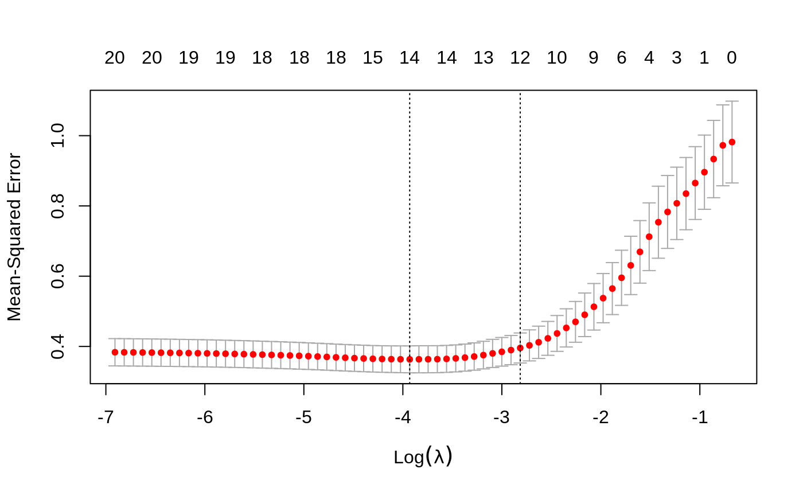
The usage of other functions are similar and we do not expand here.
Note that sparse matrices can also be used for newx, the new input matrix in the predict function. For example,
i = sample(1:5, size = 25, replace = TRUE)
j = sample(1:20, size = 25, replace = TRUE)
x = rnorm(25)
nx = sparseMatrix(i = i, j = j, x = x, dims = c(5, 20))
predict(cvfit, newx = nx, s = "lambda.min")## 1
## [1,] 0.8286576
## [2,] -0.1938951
## [3,] 0.7690298
## [4,] -0.4358310
## [5,] -0.1450590Glmnet uses a convergence criterion that focuses not on coefficient change but rather the impact of the change on the fitted values, and hence the loss part of the objective. The net result is a weighted norm of the coefficient change vector.
For gaussian models it uses the following. Suppose observation \(i\) has weight \(w_i\). Let \(v_j\) be the (weighted) sum-of-squares for variable \(x_j\): \[v_j=\sum_{i=1}^Nw_ix_{ij}^2.\] If there is an intercept in the model, these \(x_j\) will be centered by the weighted mean, and hence this would be a weighted variance. After \(\hat\beta_j^o\) has been updated to \(\hat\beta_j^n\), we compute \(\Delta_j=v_j(\hat\beta_j^o-\hat\beta_j^n)^2\). After a complete cycle of coordinate descent, we look at \(\Delta_{max}=\max_j\Delta_j\). Why this measure? We can write \[\Delta_j=\frac1N\sum_{i=1}^N w_j(x_{ij}\hat\beta_j^o-x_{ij}\hat\beta_j^n)^2,\] which measures the weighted sum of squares of changes in fitted values for this term. This measures the impact of the change in this coefficient on the fit. If the largest such change is negligible, we stop.
For logistic regression, and other non-Gaussian models it is similar for the inner loop. Only now the weights for each observation are more complex. For example, for logisitic regression the weights are those that arise from the current Newton step, namely \(w_i^*=w_i\hat p_i(1-\hat p_i)\). Here \(\hat p_i\) are the fitted probabilities as we entered the current inner loop. The intuition is the same — it measures the impact of the coefficient change on the current weighted least squares loss, or quadratic approximation to the log-likelihood loss.
What about outer-loop convergence? We use the same measure, except now \(\hat\beta^o\) is the coefficient vector before we entered this inner loop, and \(\hat\beta^n\) the converged solution for this inner loop. Hence if this Newton step had no impact, we declare outer-loop convergence.
Our package has a set of internal parameters which control some aspects of the computation of the path. The factory default settings are expected to serve in most cases, and users do not need to make changes unless there are special requirements.
There are several parameters that users can change:
fdev - minimum fractional change in deviance for stopping path; factory default = 1.0e-5
devmax - maximum fraction of explained deviance for stopping path; factory default = 0.999
eps - minimum value of lambda.min.ratio (see glmnet); factory default= 1.0e-6
big - large floating point number; factory default = 9.9e35. Inf in definition of upper.limit is set to big
mnlam - minimum number of path points (lambda values) allowed; factory default = 5
pmin - minimum null probability for any class; factory default = 1.0e-5
exmx - maximum allowed exponent; factory default = 250.0
prec - convergence threshold for multi-response bounds adjustment solution; factory default = 1.0e-10
mxit - maximum iterations for multiresponse bounds adjustment solution; factory default = 100
factory - If TRUE, reset all the parameters to the factory default; default is FALSE
We illustrate the usage by an example. Note that any changes made hold for the duration of the R session, or unless they are changed by the user with a subsequent call to glmnet.control.
##
## Call: glmnet(x = x, y = y)
##
## Df %Dev Lambda
## 1 0 0.00000 1.63100
## 2 2 0.05528 1.48600
## 3 2 0.14590 1.35400
## 4 2 0.22110 1.23400
## 5 2 0.28360 1.12400
## 6 2 0.33540 1.02400
## 7 4 0.39040 0.93320
## 8 5 0.45600 0.85030
## 9 5 0.51540 0.77470
## 10 6 0.57350 0.70590
## 11 6 0.62550 0.64320
## 12 6 0.66870 0.58610
## 13 6 0.70460 0.53400
## 14 6 0.73440 0.48660
## 15 7 0.76210 0.44330
## 16 7 0.78570 0.40400
## 17 7 0.80530 0.36810
## 18 7 0.82150 0.33540
## 19 7 0.83500 0.30560
## 20 7 0.84620 0.27840
## 21 7 0.85550 0.25370
## 22 7 0.86330 0.23120
## 23 8 0.87060 0.21060
## 24 8 0.87690 0.19190
## 25 8 0.88210 0.17490
## 26 8 0.88650 0.15930
## 27 8 0.89010 0.14520
## 28 8 0.89310 0.13230
## 29 8 0.89560 0.12050
## 30 8 0.89760 0.10980
## 31 9 0.89940 0.10010
## 32 9 0.90100 0.09117
## 33 9 0.90230 0.08307
## 34 9 0.90340 0.07569
## 35 10 0.90430 0.06897
## 36 11 0.90530 0.06284
## 37 11 0.90620 0.05726
## 38 12 0.90700 0.05217
## 39 15 0.90780 0.04754
## 40 16 0.90860 0.04331
## 41 16 0.90930 0.03947
## 42 16 0.90980 0.03596
## 43 17 0.91030 0.03277
## 44 17 0.91070 0.02985
## 45 18 0.91110 0.02720
## 46 18 0.91140 0.02479
## 47 19 0.91170 0.02258
## 48 19 0.91200 0.02058
## 49 19 0.91220 0.01875
## 50 19 0.91240 0.01708
## 51 19 0.91250 0.01557
## 52 19 0.91260 0.01418
## 53 19 0.91270 0.01292
## 54 19 0.91280 0.01178
## 55 19 0.91290 0.01073
## 56 19 0.91290 0.00978
## 57 19 0.91300 0.00891
## 58 19 0.91300 0.00812
## 59 19 0.91310 0.00740
## 60 19 0.91310 0.00674
## 61 19 0.91310 0.00614
## 62 20 0.91310 0.00559
## 63 20 0.91310 0.00510
## 64 20 0.91310 0.00464
## 65 20 0.91320 0.00423
## 66 20 0.91320 0.00386
## 67 20 0.91320 0.00351We can change the minimum fractional change in deviance for stopping path and compare the results.
##
## Call: glmnet(x = x, y = y)
##
## Df %Dev Lambda
## 1 0 0.00000 1.63100
## 2 2 0.05528 1.48600
## 3 2 0.14590 1.35400
## 4 2 0.22110 1.23400
## 5 2 0.28360 1.12400
## 6 2 0.33540 1.02400
## 7 4 0.39040 0.93320
## 8 5 0.45600 0.85030
## 9 5 0.51540 0.77470
## 10 6 0.57350 0.70590
## 11 6 0.62550 0.64320
## 12 6 0.66870 0.58610
## 13 6 0.70460 0.53400
## 14 6 0.73440 0.48660
## 15 7 0.76210 0.44330
## 16 7 0.78570 0.40400
## 17 7 0.80530 0.36810
## 18 7 0.82150 0.33540
## 19 7 0.83500 0.30560
## 20 7 0.84620 0.27840
## 21 7 0.85550 0.25370
## 22 7 0.86330 0.23120
## 23 8 0.87060 0.21060
## 24 8 0.87690 0.19190
## 25 8 0.88210 0.17490
## 26 8 0.88650 0.15930
## 27 8 0.89010 0.14520
## 28 8 0.89310 0.13230
## 29 8 0.89560 0.12050
## 30 8 0.89760 0.10980
## 31 9 0.89940 0.10010
## 32 9 0.90100 0.09117
## 33 9 0.90230 0.08307
## 34 9 0.90340 0.07569
## 35 10 0.90430 0.06897
## 36 11 0.90530 0.06284
## 37 11 0.90620 0.05726
## 38 12 0.90700 0.05217
## 39 15 0.90780 0.04754
## 40 16 0.90860 0.04331
## 41 16 0.90930 0.03947
## 42 16 0.90980 0.03596
## 43 17 0.91030 0.03277
## 44 17 0.91070 0.02985
## 45 18 0.91110 0.02720
## 46 18 0.91140 0.02479
## 47 19 0.91170 0.02258
## 48 19 0.91200 0.02058
## 49 19 0.91220 0.01875
## 50 19 0.91240 0.01708
## 51 19 0.91250 0.01557
## 52 19 0.91260 0.01418
## 53 19 0.91270 0.01292
## 54 19 0.91280 0.01178
## 55 19 0.91290 0.01073
## 56 19 0.91290 0.00978
## 57 19 0.91300 0.00891
## 58 19 0.91300 0.00812
## 59 19 0.91310 0.00740
## 60 19 0.91310 0.00674
## 61 19 0.91310 0.00614
## 62 20 0.91310 0.00559
## 63 20 0.91310 0.00510
## 64 20 0.91310 0.00464
## 65 20 0.91320 0.00423
## 66 20 0.91320 0.00386
## 67 20 0.91320 0.00351
## 68 20 0.91320 0.00320
## 69 20 0.91320 0.00292
## 70 20 0.91320 0.00266
## 71 20 0.91320 0.00242
## 72 20 0.91320 0.00221
## 73 20 0.91320 0.00201
## 74 20 0.91320 0.00183
## 75 20 0.91320 0.00167
## 76 20 0.91320 0.00152
## 77 20 0.91320 0.00139
## 78 20 0.91320 0.00126
## 79 20 0.91320 0.00115
## 80 20 0.91320 0.00105
## 81 20 0.91320 0.00096
## 82 20 0.91320 0.00087
## 83 20 0.91320 0.00079
## 84 20 0.91320 0.00072
## 85 20 0.91320 0.00066
## 86 20 0.91320 0.00060
## 87 20 0.91320 0.00055
## 88 20 0.91320 0.00050
## 89 20 0.91320 0.00045
## 90 20 0.91320 0.00041
## 91 20 0.91320 0.00038
## 92 20 0.91320 0.00034
## 93 20 0.91320 0.00031
## 94 20 0.91320 0.00028
## 95 20 0.91320 0.00026
## 96 20 0.91320 0.00024
## 97 20 0.91320 0.00022
## 98 20 0.91320 0.00020
## 99 20 0.91320 0.00018
## 100 20 0.91320 0.00016We set fdev = 0 to continue all along the path, even without much change. The length of the sequence becomes 100, which is the default of nlambda.
Users can also reset to the default settings.
The current settings are obtained as follows.
## $fdev
## [1] 1e-05
##
## $eps
## [1] 1e-06
##
## $big
## [1] 9.9e+35
##
## $mnlam
## [1] 5
##
## $devmax
## [1] 0.999
##
## $pmin
## [1] 1e-09
##
## $exmx
## [1] 250
##
## $itrace
## [1] 0
##
## $prec
## [1] 1e-10
##
## $mxit
## [1] 100Some people may want to use glmnet to solve the Lasso or elastic-net problem at a single \(\lambda\). We compare here the solution by glmnet with other packages (such as CVX), and also as an illustration of parameter settings in this situation.
Warning: Though such problems can be solved by glmnet, it is not recommended and is not the spirit of the package. glmnet fits the entire solution path for Lasso or elastic-net problems efficiently with various techniques such as warm start. Those advantages will disappear if the \(\lambda\) sequence is forced to be only one value.
Nevertheless, we still illustrate with a typical example in linear model in the following for the purpose of comparison. Given \(X, Y\) and \(\lambda_0 > 0\), we want to find \(\beta\) such that \[ \min_{\beta} ||Y - X\beta||_2^2 + \lambda_0 ||\beta||_1, \] where, say, \(\lambda_0 = 8\).
We first solve using glmnet. Notice that there is no intercept term in the objective function, and the columns of \(X\) are not necessarily standardized. Corresponding parameters have to be set to make it work correctly. In addition, there is a \(1/(2n)\) factor before the quadratic term by default, we need to adjust \(\lambda\) accordingly. For the purpose of comparison, the thresh option is specified to be 1e-20. However, this is not necessary in many practical applications.
We then extract the coefficients (with no intercept).
In linear model as here this approach worked because we were using squared error loss, but with any nonlinear family, it will probably fail. The reason is we are not using step length optimization, and so rely on very good warm starts to put us in the quadratic region of the loss function.
Alternatively, a more stable and strongly recommended way to perform this task is to first fit the entire Lasso or elastic-net path without specifying lambda, but then provide the requested \(\lambda_0\) to predict function to extract the corresponding coefficients. In fact, if \(\lambda_0\) is not in the \(\lambda\) sequence generated by glmnet, the path will be refitted along a new \(\lambda\) sequence that includes the requested value \(\lambda_0\) and the old sequence, and the coefficients will be returned at \(\lambda_0\) based on the new fit. Remember to set exact = TRUE in predict function to get the exact solution. Otherwise, it will be approximated by linear interpolation.
fit = glmnet(x, y, intercept = F, standardize = F, thresh = 1e-20)
beta_glmnet = as.matrix(predict(fit, s = 8/(2*dim(x)[1]), type = "coefficients",
exact = TRUE, x=x, y=y)[-1,])We also use CVX, a general convex optimization solver, to solve this specific Lasso problem. Users could also call CVX from R using the CVXfromR package and solve the problem as follows.
library(CVXfromR)
setup.dir = "change/this/to/your/cvx/directory"
n = dim(x)[1]; p = dim(x)[2]
cvxcode = paste("variables beta(p)",
"minimize(square_pos(norm(y - x * beta, 2)) + lambda * norm(beta, 1))",
sep = ";")
Lasso = CallCVX(cvxcode, const.var = list(p = p, x = x, y = y, lambda = 8), opt.var.names = "beta", setup.dir = setup.dir, matlab.call = "change/this/to/path/to/matlab")
beta_CVX = Lasso$betaFor convenience here, the results were saved in CVXResult.RData, and we simply load in the results.
In addition, we use lars to solve the same problem.
fit_lars = lars(x, y, type = "lasso", intercept = F, normalize = F)
beta_lars = predict(fit_lars, s = 8/2, type = "coefficients", mode = "lambda")$coefficientsThe results are listed below up to 6 decimal digits (due to convergence thresholds).
cmp = round(cbind(beta_glmnet, beta_lars, beta_CVX), digits = 6)
colnames(cmp) = c("beta_glmnet", "beta_lars", "beta_CVX")
cmp## beta_glmnet beta_lars beta_CVX
## V1 1.389118 1.389118 1.389118
## V2 0.007991 0.007991 0.007991
## V3 0.731234 0.731234 0.731234
## V4 0.031119 0.031119 0.031119
## V5 -0.866793 -0.866793 -0.866793
## V6 0.564867 0.564867 0.564867
## V7 0.069678 0.069678 0.069678
## V8 0.358346 0.358346 0.358346
## V9 0.000000 0.000000 0.000000
## V10 0.070565 0.070565 0.070565
## V11 0.173464 0.173464 0.173464
## V12 -0.027472 -0.027472 -0.027472
## V13 -0.017960 -0.017960 -0.017960
## V14 -1.138053 -1.138053 -1.138053
## V15 -0.070990 -0.070990 -0.070990
## V16 0.000000 0.000000 0.000000
## V17 0.000000 0.000000 0.000000
## V18 0.000000 0.000000 0.000000
## V19 0.000000 0.000000 0.000000
## V20 -1.097528 -1.097528 -1.097528Friedman, Jerome, Trevor Hastie, and Robert Tibshirani. 2010. “Regularization Paths for Generalized Linear Models via Coordinate Descent.” Journal of Statistical Software, Articles 33 (1): 1–22. https://doi.org/10.18637/jss.v033.i01.
Simon, Noah, Jerome Friedman, and Trevor Hastie. 2013. “A Blockwise Descent Algorithm for Group-Penalized Multiresponse and Multinomial Regression.”
Simon, Noah, Jerome Friedman, Trevor Hastie, and Robert Tibshirani. 2011. “Regularization Paths for Cox’s Proportional Hazards Model via Coordinate Descent.” Journal of Statistical Software, Articles 39 (5): 1–13. https://doi.org/10.18637/jss.v039.i05.
Tibshirani, Robert, Jacob Bien, Jerome Friedman, Trevor Hastie, Noah Simon, Jonathan Taylor, and Ryan Tibshirani. 2012. “Strong Rules for Discarding Predictors in Lasso-Type Problems.” Journal of the Royal Statistical Society: Series B (Statistical Methodology) 74 (2): 245–66. https://doi.org/10.1111/j.1467-9868.2011.01004.x.